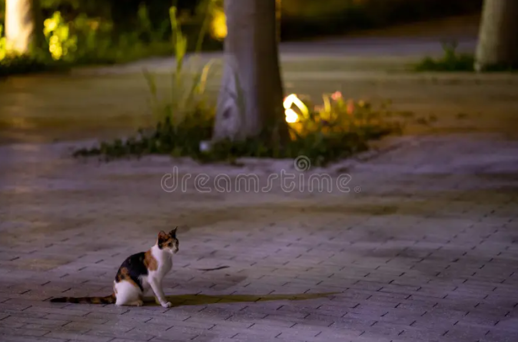

Mike empieza su camino al parque, el cual se encuentra a unas cuadras de distancia.
Mientras se va acercando, se da cuenta del gran tamaño del parque. Este cuenta con áreas verdes, árboles, juegos y un pequeño lago.
Al llegar al parque, Mike es tomado por sorpresa al ver a una familia de gatos callejeros acercándose a él. Se ven listos para atacar.
En su pánico, Mike observa sus alrededores para poder ver qué hacer, pero no ve nada más que un hombre uniformado cerca de una camioneta. Talvez le sería útil pedirle ayuda.
Es momento de decidir qué hará Mike en esta situación.